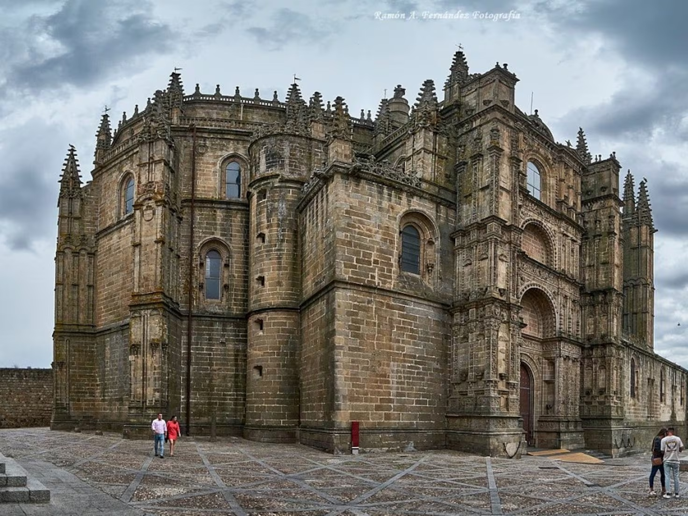

Encuentros
EncuentrosCoreografía
La estética que conoces, con escenas que comparten pantalla y se entregan el recorrido lateralmente, en diagonal y mediante aproximaciones.
ENTRAR EN EL RELATO →02 / OTRA MIRADA ↗
Materia y luzNocturno
El mismo motor con una composición más oscura, ejes distintos, tipografía editorial y un tono cobrizo que acompaña la piedra.
ENTRAR EN EL RELATO →03 / DESDE CERO ↗ Atlas sensible
Atlas sensibleEl lugar y su huella
Una estructura nueva: páginas conectadas en dos dimensiones. El scroll se convierte en un camino con giros entre historias.
DESPLEGAR EL ATLAS →